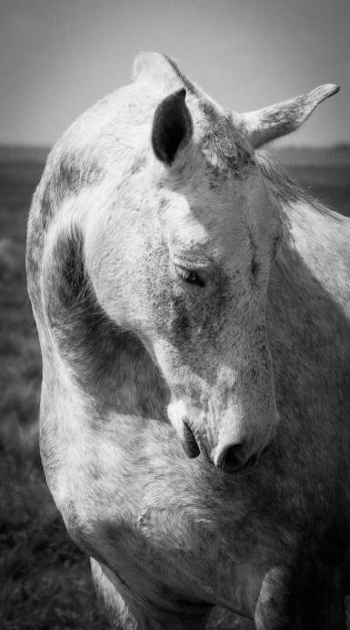

DEL B&W:
(pequeña reflexión)
No hay duda que la mayoría de nosotros probablemente hacemos fotos a
color.
Es algo completamente normal, ya que vemos el mundo en colores.
Las fotografías en blanco y negro tienen un atractivo especial.
Este tipo de imagenes se destacan sobre todo cuando hay mucho
contraste en la escena y el fondo muestra variedad de color, o
cuando la fotografía tiene demasiado "ruido o grano" producido,
generalmente, por el uso de valores eleveados de ISO.